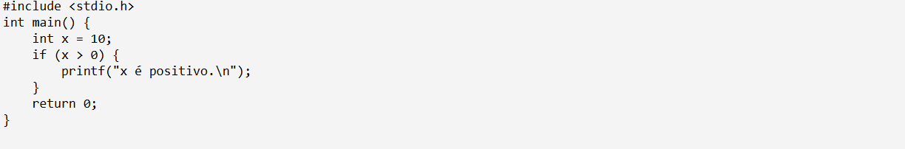
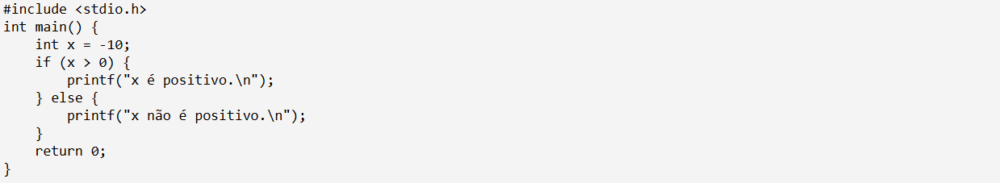
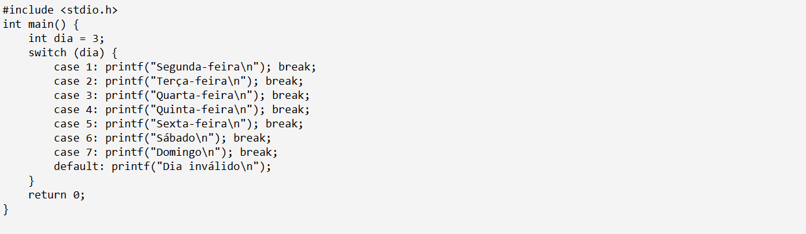

Aula 3: Condicionais e Laços de Repetição
Nessa aula você pode ter acesso a várias explicações que irão te auxiliar a aprender mais sobre estruturas condicionais e laços de repetição em linguagem C.
Como funcionam as estruturas condicionais?
Na programação em C, as estruturas condicionais são usadas para tomar decisões com base em condições específicas. As formas mais comuns são: if, else if, else e switch.
Como entender laços de repetição?
Os laços de repetição são usados em programação para executar um bloco de código várias vezes. Em C, os laços mais comuns são for, while e do-while.
Ambas se complementam?
Estruturas condicionais e laços de repetição trabalham juntos para automatizar e personalizar o processo de um programa, economizando tempo e esforço enquanto atendem às necessidades.
Exemplo de Estrutura If

Exemplo de Estrutura If-Else

Exemplo de Estrutura Switch
